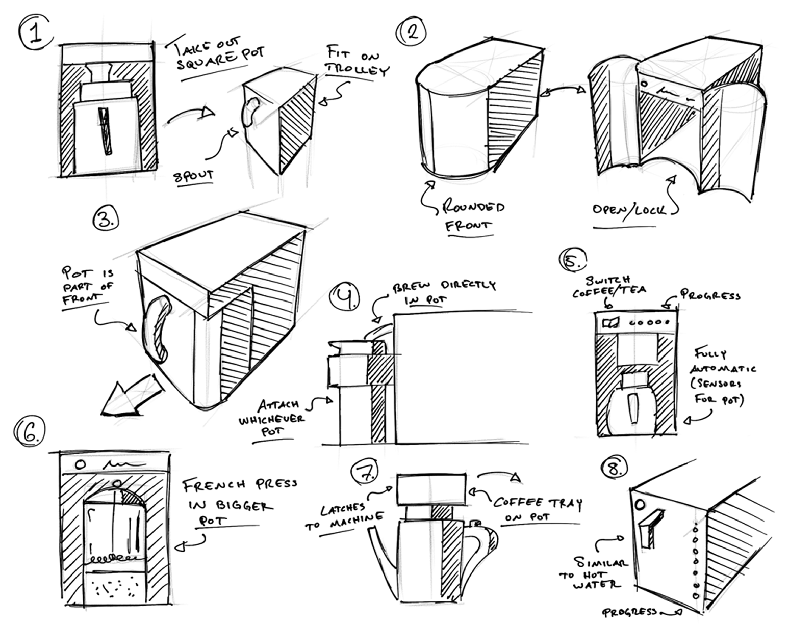
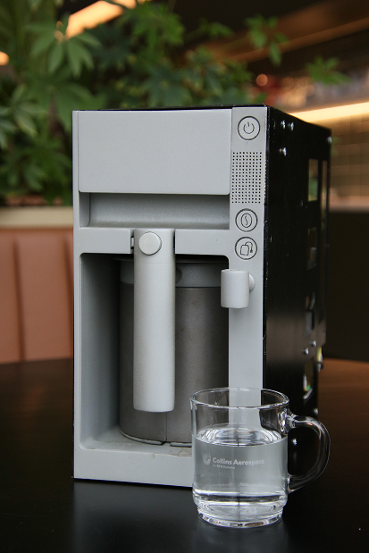
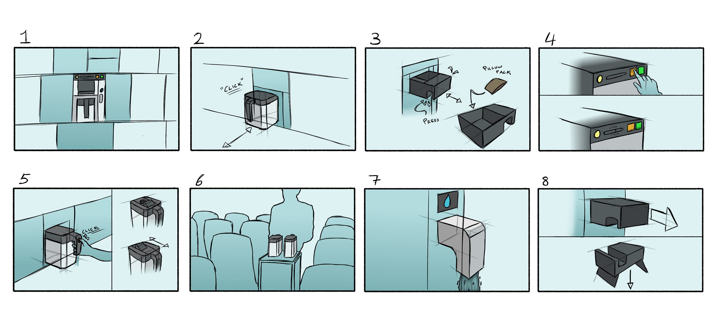
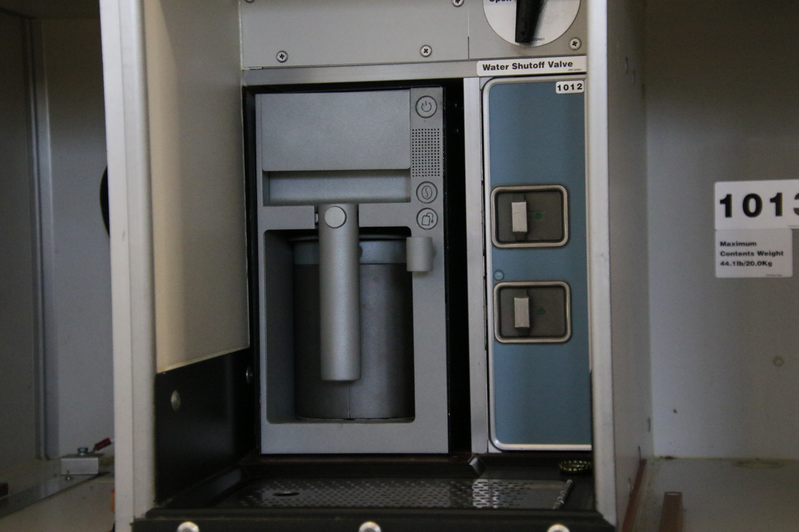
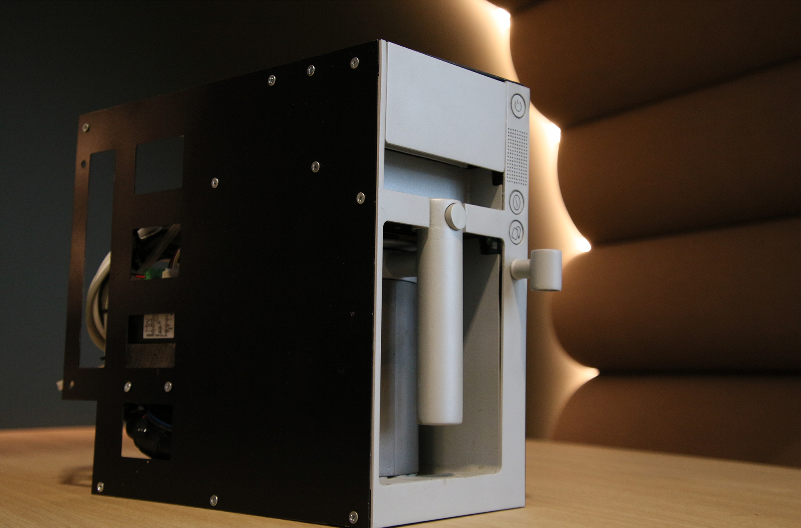

Identifying focus areas
Areas of improvement were identified. Brainstorming ideas and sketches followed, as well as co-design sessions with flight attendants.

Collins Aerospace
The task was to design the next generation inflight coffee maker with a focus on improved usability, functionality, and sustainability.

Identifying focus areas
Areas of improvement were identified. Brainstorming ideas and sketches followed, as well as co-design sessions with flight attendants.

Creating a vision
As concepts were created, a vision for how a final product was to be used started to take place. Aiming for a more efficient, clearer and more sustainable solution, prototyping began.

The final prototype
In the end, a fully functioning prototype was created and validated together with flight attendants. The prototype was created by combining various rapid prototyping manufacturing methods, such as 3D printing and laser cutting. Working buttons and a thermoblock to heat water quickly were all working thanks to an integrated microcomputer and a particularly designed PCB. Metal sheets were bent to create the casing and some other metal parts were sandblasted to get a desired finish.

